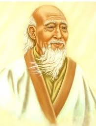

Учение о социальной гармонии и моральном совершенстве
Конфуцианство, основанное Конфуцием (551-479 до н.э.), emphasizes moral integrity, social harmony, and proper conduct in relationships.
Конфуцианство стало официальной идеологией Китая на протяжении многих веков, формируя систему образования, государственное управление и семейные ценности.
"Не делай другим того, чего не желаешь себе" — Конфуций
Путь природы и спонтанной гармонии

Даосизм, основанный Лао-цзы (6 век до н.э.), учит следованию естественному пути Вселенной - Дао.
Баланс противоположностей: светлое и темное, активное и пассивное, мужское и женское.
Даосизм повлиял на развитие китайской медицины, боевых искусств, фэн-шуй и различных духовных практик.
"Знающий не доказывает, доказывающий не знает" — Лао-цзы, Дао Дэ Цзин
Путь к просветлению и прекращению страданий
Буддизм пришел в Китай из Индии в 1 веке н.э. и адаптировался к местным традициям, создав уникальные китайские школы.
Правильные: воззрения, мышление, речь, поведение, образ жизни, усилие, осознанность, сосредоточение.
Медитативная школа, предшественник дзен-буддизма
Школа веры в будду Амитабху
Синкретическая школа
"Ум - это всё. Вы становитесь тем, о чём думаете" — Будда